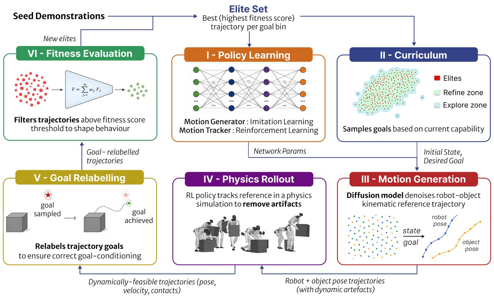
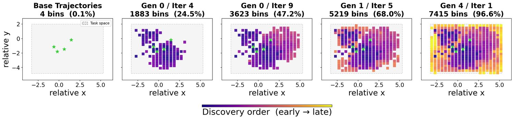
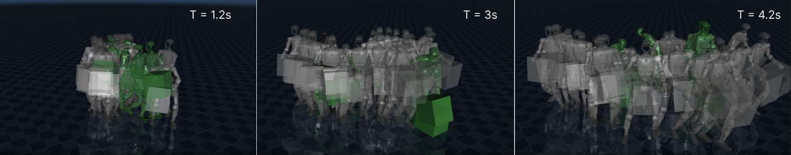
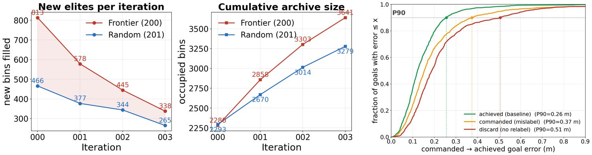

Abstract
Imitating human demonstrations has emerged as a dominant paradigm for learning humanoid loco-manipulation policies. However, scaling these approaches remains challenging due to the high cost of collecting diverse demonstrations and the need for continual human intervention to correct policy failures. We present a self-supervised framework that bootstraps from sparse demonstrations and progressively expands its behavioral repertoire, enabling the learning of a goal-conditioned policy that automatically explores the goal space with minimal expert supervision. Our approach combines diffusion-based trajectory generation with reinforcement learning, where the latter is used to track goal-conditioned trajectories produced by the diffusion model for a range of loco-manipulation skills. Through extensive ablation studies and comparisons with state-of-the-art methods, we demonstrate the effectiveness of our framework on multiple humanoid loco-manipulation skills.
Video
Method

Generate
A dual-branch diffusion transformer produces robot and object reference trajectories for a commanded goal. A global stream handles root and object motion, a local stream handles body pose, and structured partial unmasking teaches the two to stay consistent.
Validate
An RL whole-body tracker executes each reference in simulation and acts as a dynamic filter. A physics-based fitness (tracking, contact and object terms) keeps only rollouts that are feasible and complete the task.
Relabel & expand
Kept rollouts are stored under the goal they achieved, not the one commanded. A frontier curriculum samples the next goals just beyond the current elite set, and both models are fine-tuned on the growing archive.
Results
Task-space coverage grows with every generation

| Method | Push | Kick | Hand-off | Pick & place |
|---|---|---|---|---|
| Humanoid-DART | 61.1 | 54.8 | 51.5 | 96.6 |
| Parameterised Motion | 3.9 | 23.9 | 24.4 | 5.7 |
| Hierarchical Diffusion + RL (no loop) | 2.2 | 2.6 | 32.0 | 6.2 |
A family of skills from a handful of seeds

Elite trajectories in simulation
What makes it work

BibTeX
@article{thiagarajan2026humanoiddart,
title = {Humanoid-DART: Humanoid Loco-Manipulation using Diffusion-guided
Augmentation through Relabeling and Tracking},
author = {Thiagarajan, Kanish and Debbad, Pranav and Dh{\'e}din, Victor and
Omar, Shafeef and Khadiv, Majid},
journal = {IEEE Robotics and Automation Letters},
year = {2026}
}